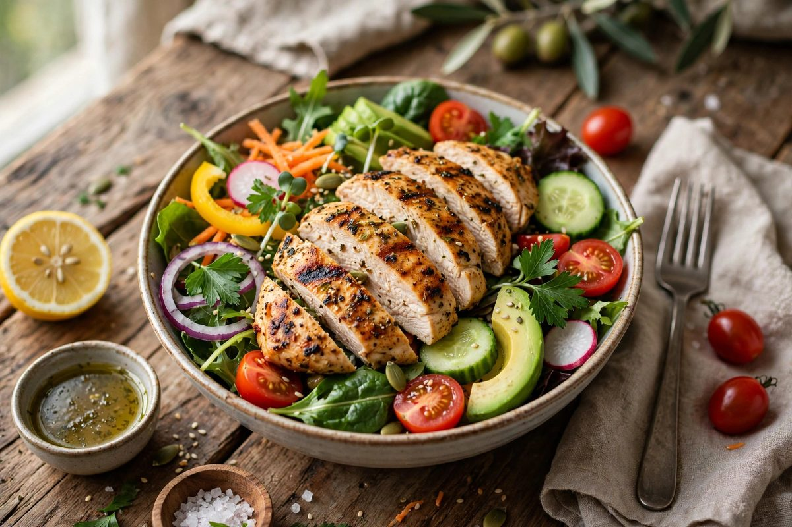

How Many Calories to Lose Weight
How to set a calorie target for weight loss, how fast to expect results, and how to adjust when progress stalls.
Losing weight comes down to a sustained calorie deficit: eating less energy than your body uses, so it draws on stored fat. The size of the deficit decides the speed of loss, and the speed decides how sustainable the plan is. This guide explains how to calculate a target, what rate of loss to expect, and how to adjust when the scales stop moving.
Start from your maintenance calories
The first step is to find your total daily energy expenditure, or TDEE, which is the number of calories that keeps your weight steady. Our calorie calculator estimates it from your age, sex, weight, height and activity level. For example, a moderately active 35-year-old woman weighing 75 kg might have a TDEE of about 2,100 calories a day. That number is your maintenance level. Any target below it produces weight loss, and the further below it, the faster the loss, but also the harder the plan is to follow.
Choose a deficit that fits your life
A deficit of about 500 calories a day is the standard recommendation, producing roughly 0.5 kg of loss per week. A smaller deficit of 250 calories a day gives about 0.25 kg a week, slower but easier to live with. A deficit of 750 to 1,000 calories a day can produce faster loss, but it leaves little room for error and is much harder to sustain, and it should be discussed with a doctor, especially if you have a health condition. Very low intakes, generally below about 1,200 calories a day for women and 1,500 for men, should only be followed with medical supervision.
What to expect week by week
In the first week or two, weight often drops faster than the maths predicts, because the body sheds water as glycogen stores fall. After that, loss usually settles to the expected rate. A loss of 0.5 kg a week means about 2 kg a month and about 12 kg in six months, which is a substantial change. Weigh yourself once a week, at the same time and in the same conditions, and look at the trend over a month rather than a single reading, because daily weight can swing by a kilogram or more with water, food and hormones.
When progress stalls
A plateau after several weeks is normal. Partly it happens because a lighter body burns fewer calories, so the deficit shrinks. Partly it happens because people gradually eat a little more and move a little less than they think. When your weight has not moved for three weeks, first check the basics: are portions creeping up, are snacks uncounted, has exercise slipped? Then recalculate your TDEE at your new weight and reset your target. A change of 100 to 200 calories, or adding a few thousand steps a day, is usually enough to restart progress.
Keeping the weight off
Losing weight is only half the job. People who keep weight off tend to keep the habits that lost it: regular weighing, daily movement, and a rough sense of how much they eat. As you approach your target, raise your calories gradually towards your new maintenance level rather than jumping straight back to old eating habits. Expect some regain of water weight in the first weeks of eating more; it is not fat. The goal is not a perfect number on the scale, but a way of eating you can keep for years.
A six-month example
Take a moderately active 40-year-old man weighing 95 kg, with a TDEE of about 2,700 calories a day. He aims for 2,200 calories, a 500-calorie deficit, and loses about 0.5 kg a week. After a month he is 93 kg, after three months about 89 kg, and after six months about 83 kg, a loss of 12 kg. In practice the loss is rarely that smooth: the first two weeks are faster because of water, and there is usually a plateau around month three, when the lighter body burns fewer calories. He recalculates at 89 kg, lowers the target to 2,050, and progress resumes. The example is realistic precisely because it includes the stall and the adjustment, which are part of every real weight-loss plan.
Frequently Asked Questions
How many calories should I eat to lose weight?
About 500 below your maintenance calories, for roughly 0.5 kg a week. Start from your TDEE and adjust from your results.
How fast will I lose weight?
About 0.5 kg a week at a 500-calorie deficit, after an often faster first week or two when water weight drops.
What should I do when weight loss stalls?
First check portions and activity, then recalculate your TDEE at your new weight. A change of 100 to 200 calories usually restarts progress.